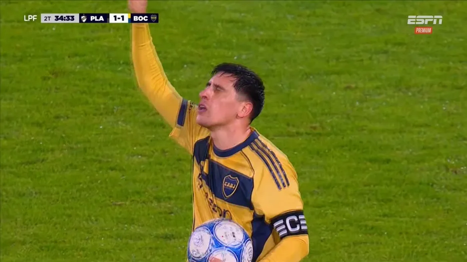

Volvió a mojar
Merentiel volvió a marcar y le dio el empate a Boca ante Platense, para el que Nicolás López no tuvo minutos
El delantero uruguayo apareció en un momento clave y convirtió el gol que le permitió al conjunto xeneize rescatar un punto.
Fútbol argentino · 16 de agosto de 2026

Boca Juniors empató 1-1 frente a Platense como visitante por la quinta fecha del Torneo Clausura argentino. Miguel Merentiel convirtió el gol que le permitió al conjunto xeneize rescatar un punto.
Platense abrió el marcador a los 52 minutos. Kevin Retamar aprovechó una jugada iniciada con un envío largo y definió con un remate cruzado para poner en ventaja al equipo local.
El gol se produjo después de un error en el cierre de Leandro Lozano, quien fue titular en Boca y salió sustituido durante el segundo tiempo.
A los 79 minutos llegó la igualdad de Boca. Tomás Aranda envió un centro, Santiago Ascacíbar bajó la pelota y Merentiel apareció en el segundo palo para definir ante el arquero.
Con ese tanto, el delantero uruguayo terminó una racha de cinco encuentros consecutivos sin convertir y volvió a ser decisivo para el equipo.
Después de alcanzar el empate, Boca intentó completar la remontada, pero no consiguió marcar el segundo gol. Platense también tuvo oportunidades para volver a ponerse en ventaja y el resultado no cambió.
El empate dejó sensaciones diferentes para ambos equipos. Boca sumó un punto gracias a la aparición de Merentiel, aunque no obtuvo la victoria que buscaba.
El uruguayo Martín Barrios jugó todo el partido en Platense, que tuvo a Nicolás López en el banco de suplentes. El Diente no vio minutos. El Calamar llegó a cinco puntos en el Clausura y se ubicó antepenúltimo, mientras que quedó vigesimosexto con 21 unidades en la Anual.
Boca llegó a seis puntos en el Clausura y quedó decimoprimero. Además, está quinto con 36 unidades en la tabla acumulada y ocupa puestos de clasificación a la Copa Sudamericana.